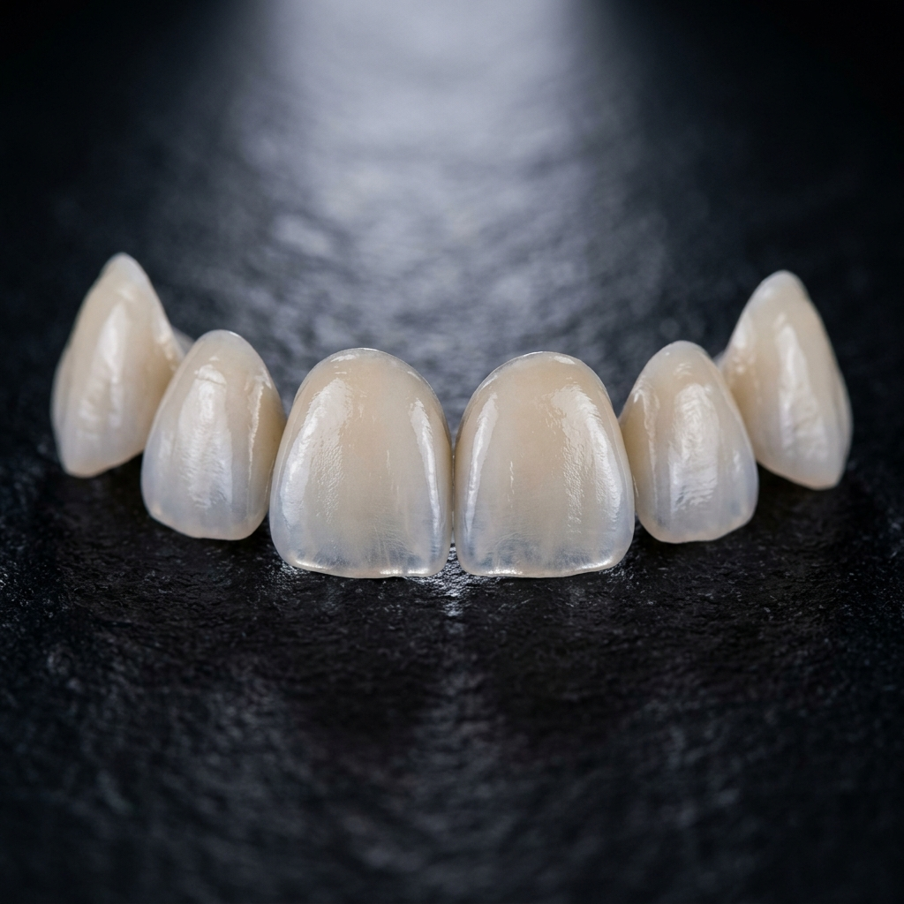

Se você já se perguntou como artistas e influenciadores conseguem aquele sorriso deslumbrante, branco e simétrico quase do dia para a noite, a resposta quase sempre é a mesma: Lentes de Contato Dental.
O que são Lentes de Contato Dental?
São lâminas ultrafinas de porcelana (algumas com apenas 0,2 milímetros de espessura) que são coladas sobre a parte frontal dos dentes. Diferente das facetas tradicionais, as lentes de contato exigem um desgaste mínimo (ou às vezes nenhum desgaste) do dente natural.
O que elas podem corrigir?
As lentes de contato são extremamente versáteis e podem corrigir diversas imperfeições estéticas simultaneamente:
- Cor: Dentes amarelados, escurecidos ou manchados que não respondem bem ao clareamento convencional.
- Formato: Dentes curtos, pontiagudos ou desgastados pelo tempo ou bruxismo.
- Espaçamento: Fechamento de diastemas (espaços entre os dentes).
- Alinhamento: Dentes levemente apinhados ou tortos (quando não há indicação obrigatória de aparelho ortodôntico).
É necessário desgastar o dente?
Esse é um dos maiores medos dos pacientes. Hoje, com a evolução dos materiais cerâmicos e o planejamento digital do sorriso, o desgaste é mínimo, atingindo apenas a camada mais superficial do esmalte. Em alguns casos selecionados (como fechamento de pequenos espaços), o desgaste pode até ser zero.
Durabilidade e Cuidados
A porcelana utilizada é altamente resistente e não mancha com o tempo – ou seja, você pode continuar tomando seu café e vinho sem medo! Se bem cuidadas, as lentes de contato dentais podem durar 10 a 15 anos, ou até mais.
Os cuidados são os mesmos que você teria com os dentes naturais: escovação eficiente, uso diário do fio dental e visitas semestrais ao dentista para manutenção.
Transforme seu Sorriso
Descubra como o planejamento digital e as lentes de porcelana podem criar o sorriso dos seus sonhos.
Saber Mais Sobre Odontologia Estética